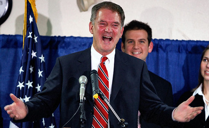

Washington -- Conservative Doug Hoffman conceded the race in the 23rd Congressional District last week after receiving two pieces of grim news for his campaign: He was down 5,335 votes with 93 percent of the vote counted on election night, and he had barely won his stronghold in Oswego County.
As it turns out, neither was true.
But Hoffman's concession -- based on snafus in Oswego County and elsewhere that left his vote undercounted -- set off a chain of events that echoed all the way to Washington, D.C., and helped secure passage of a historic health care reform bill.
|  |
Democratic Rep. Bill Owens was quickly sworn into office on Friday, a day before the rare weekend vote in the House of Representatives. His support sealed his party's narrow victory on the health care legislation.
Now a recanvassing in the 11-county district shows that Owens' lead has narrowed to 3,026 votes over Hoffman, 66,698 to 63,672, according to the latest unofficial results from the state Board of Elections.
In Oswego County, where Hoffman was reported to lead by only 500 votes with 93 percent of the vote counted election night, inspectors found Hoffman actually won by 1,748 votes -- 12,748 to 11,000.
The new vote totals mean the race will be decided by absentee ballots, of which about 10,200 were distributed, said John Conklin, communications director for the state Board of Elections.
Under a new law in New York that extended deadlines, military and overseas ballots received by this coming Monday (and postmarked by Nov. 2) will be counted. Standard absentee ballots had to be returned this past Monday.
Conklin said the state sent a letter to the House Clerk last week explaining that no winner had been determined in the 23rd District, and therefore the state had not certified the election. But the letter noted that Owens still led by about 3,000 votes, and that the special election was not contested -- two factors that legally allowed House Speaker Nancy Pelosi to swear in Owens on Friday.
"We sent a letter to the clerk laying out the totals," Conklin said. "The key is that Hoffman conceded, which means the race is not contested. However, all ballots will be counted, and if the result changes, Owens will have to be removed."
Before Owens was sworn in Friday, Rep. John Garamendi, a Democrat who won a special election in California, was sworn in Thursday. The two gave Pelosi the votes she needed to reach a majority of 218 and pass the historic health care reform legislation in the House.
The bill passed 220-215 late Saturday with the support of only one Republican. The Republican, Rep. Anh "Joseph" Cao of Louisiana, said he voted for the legislation only after seeing that Democrats had the 218 votes needed for passage.
Now Hoffman, who campaigned against the health care reform bill, is carefully watching as the 23rd District race tightens and he is left to wonder if he conceded too soon.
"I don't know if we would have conceded on election night," Rob Ryan, Hoffman's campaign spokesman, said Wednesday while discussing the latest results of the recanvassing. "I'm someone who doesn't like to look back. But would we have taken longer to make a decision on election night? Probably, if we knew it was only 3,000 votes making the difference."
Ryan, while acknowledging that Hoffman's chances of pulling off a come-from-behind victory are still remote, said the campaign is looking at its legal options.
"We're basically watching and waiting," Ryan said. "We've been looking very closely at the recanvass. We're going to see how this week shapes up, and then we're going to determine what to do."
Ryan said an important factor in the decision to concede was the unexpected -- and erroneous -- close vote in Oswego County, where polls had Hoffman with a double digit percentage point lead heading into Election Day.
"That's the thing that threw us off," Ryan said.
Oswego County elections officials blame the mistakes on "chaos" in their call-in center that included a phone system foul-up and inspectors who read numbers incorrectly when phoning in results. Of 245 races in the county -- not including the congressional and court races -- 84 had incorrect totals reported election night.
In the congressional race, more votes were cast in Oswego County than any other in the 11-county district.
The district's second biggest voter turnout was in Jefferson County, where Hoffman also has benefited from a turnaround since election night, gaining about 700 votes. Owens led Hoffman by 300 votes on the final election night tally. But after recanvassing, Hoffman now leads by 424 votes, 10,884 to 10,460.
Jerry Eaton, the Republican elections commissioner for Jefferson County, said inspectors found a problem in four districts where Hoffman's vote total was mistakenly entered as zero.
"Hoffman definitely gained votes where he didn't have them," Eaton said.
Jefferson County, home of Fort Drum and the Army's 10th Mountain Division, distributed 2,299 absentee ballots for the special election. As of this week, 1,303 had been returned but not counted, Eaton said. He said the county will begin counting the absentee ballots earyl next week.
Conklin, of the state Board of Elections, said officials did not have updated absentee ballot totals from the other counties.
When asked about the tightening race, Owens spokesman Jon Boughtin released a statement without directly addressing the election. "Since being elected, Congressman Owens has remained focused on the issues at hand: working with local leaders to address the Champlain Bridge closure, meeting with commanders at Fort Drum and continuing the work to strengthen Upstate New York," the statement said.
Ryan said the absentee ballots are likely to favor Hoffman because most were likely mailed before Republican Dede Scozzafava suspended her campaign three days before the election.
"For Doug to win, we needed a three-way race," Ryan said, adding that the campaign's internal polls showed Hoffman would win with all three candidates.
"Given the majority of these ballots are from a three-way race, we think the ballots are going to break Doug's way," Ryan said.
Ryan declined to say what percentage of the absentee vote the campaign believes Hoffman would need to win the race. Nevertheless, Hoffman's campaign is optimistic.
"When people look back at this race, it was a remote possibility that Doug Hoffman would be a contender," Ryan said. "But miracles do happen."
Washington correspondent Mark Weiner can be reached at mweiner@syracuse.com or 571-970-3751.